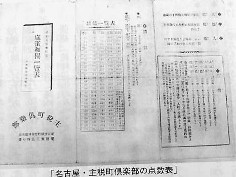

麻雀荘
昭和初期、麻雀が普及するにつれ、ゲームの場を提供する専門店、すなわち麻雀荘が登場した。日本最初の営業麻雀荘は、大正13年(AD1929)*30、芝・南佐久間町に平山三郎が開いた南々倶楽部である。
*30すでに大正７年（AD1918）、東京で麻生雀仙が麻雀クラブを開設しているが、営業用ではなく会員制のサロン的なものであった。
この南々倶楽部は有料ではあったが、一般雀荘というより麻雀教習所であった。しかしこれが好評であったので、昭和２年、銀座四丁目・数寄屋橋ビル（現在のソニービルの場所）に進出、新たに「南山荘」を、さらに赤坂に「南海荘」を開店した*31。
*31銀座を歩く人たちが「麻雀（「あさすずめ）ってなんだい？」 「雀の肝を焼いて作った強精剤らしい」などと言葉を交わしたというエピソードは、このときのこと。
現在は風俗営業法によって警察の営業許可を要するが、新職種の事なので当初はそのような許可は必要なかった。しかしやがて警察の指導により、許可が必要ということになった。そこで営業は継続したまま、昭和２年、警察を管轄する内務省に営業許可の申請をした。
しかし内務省は初めてのケースということで処理をなおざりにしていた。しかし続々と開店した他店からも申請が相次ぎ、昭和４年、申請から足かけ四年を経て営業許可がおりた。以来、申請に対してはスムーズな許可がなされるようになったという*33。以後も開店は相次ぎ、昭和４年(AD1029)には1521軒、翌５年には1712軒を数えたという*34。
*33芝区烏森町一番地烏森ビル２Ｆで麻雀荘を営む「小泉じう」の昭和４年８月17日の申請に対して、同年９月19日に許可されている(許可番号八二一号)[日S4/9]）。
*34当時のゲーム料金は半荘35銭、一荘70銭で時間制限無しであった。
横浜においては大正12年（震災前）、南太田町の鐵温泉で麻雀会が催されたのが嚆矢とされる*35。そして大正14年には、仙雀会という団体が結成され、春秋２回、定期的に大会が開催されるようになった。しかし仙雀会の活動も会員のみが対象で一般に普及するには至らなかった。
*35参加者は７〜８名であったという。
昭和２年の秋、野澤屋デパートが集客の為に、日本に在留していた梁扶初*36（中華民国体育協会副会長）を講師として招き、一週間、麻雀講習会を開いた。以後、徐々に普及し、昭和３年には松尾良治が三七三麻雀倶楽部を設立した。
*36昭五・5/20、報知新聞主催の日華麻雀争覇戦では華軍の主将を務めた人物。
昭和４年２月には仙雀会も日本麻雀連盟に加盟し、広く会員募集を始めた。以後、４月には小鮒氏が横浜麻雀倶楽部を、６月には横浜麻雀同好会、曙麻雀倶楽部、関内麻雀倶楽部、横浜麻雀会など設立が相次ぎ、８月には全神奈川県麻雀連盟が組織された*37。
*37・日雀連機関誌「麻雀春秋(S5/9)」
関西方面ではまた大正12年(AD1924)は北浜二丁目（難波橋の東北角）の広珍園という中華料理店を借り受け、全徳信治*38、司忠、森田茂樹*39、多田卯三郎*40、山田武、深江彦一*41、熱海三郎*42、志村勝之助、高砂政太郎、緒方隆直等の会員制クラブができ、後にこれが営業化して瀬尾氏の灘萬麻雀倶楽部ができた。
*38麻雀揺籃期の重鎮にして関西雀界のリーダー。大阪新聞、産経新聞代表取締役を務める。
*39大日本セルロイド（株）社長。大正12年、日本最初の麻雀牌を自社のセルロイド技術を生かして製造、販売した。
*40大日本セルロイド（株）役員
*41大阪毎日新聞役員
*42元陸軍少将。後に関西麻雀連盟理事長
また大正13年(AD1925)に白木屋にて麻雀競技会が開催された。その後、四ツ橋に新興クラブ、阿波座に中外クラブ等が誕生した。香珍園麻雀クラブは後に今橋の帝ビル地下室に移転し、大阪麻雀クラブと改称した。
やがて関東と同じく、「精華倶楽部（代表・富田半四郎）」、「西宮倶楽部(代表・中北五兵衛)」、「築港倶楽部（代表・大久保樟治）」、「北麻雀倶楽部（代表・岡慶一）」、「船場倶楽部（代表・板倉喜三馬）」、「新町倶楽部」、「蒼龍倶楽部」、「新興倶楽部」など、麻雀荘は一気に増加した*43。しかしいずれも会員組織の雀荘で、一般客が自由に出入りする形の営業ではなかった*44。
*43この他にも「睦倶楽部」、「心斎橋倶楽部」、「阪神倶楽部」、「太平ビル麻雀倶楽部」、「清交社倶楽部」、「大三元倶楽部」、「中外倶楽部」、「五色倶楽部」などがあった。（家川弥吉「麻雀賛」）
*44日雀連機関誌「麻雀春秋(S4/5)」
このように隆盛を続けた麻雀界であるので、昭和２年には関東と関西の麻雀組織が大同団結し、統一組織を作る動きがあった。話し合いは紆余曲折を経ながらも進展していたが、昭和３年、協議さなかに関東側がいち早く日本麻雀連盟の設立、段位の発行を表明した。そのために関西も１ト月後には独自に関西麻雀連盟を創設することになり、統一組織結成には至らなかった。
名古屋においては大正８年に川村寛が中区老松町に麻雀講習会なる看板を掲げたのを嚆矢とする。しかし社会的認識もなく生徒も集まらなかった。それどころか「中国賭博を開帳しているのでは？」との疑惑から、警察の指示により看板を降ろすことになった。
昭和２年、張秀彦が中国から牌を土産に帰国した。名古屋市北区大曽根で麻雀用具店「麻雀堂」を開業、同時に「麻雀講習いたします」という看板を揚げた。これが縁で片岡成一と知り合い、名古屋麻雀倶楽部が誕生した。
以後は張敏彦の「陸ビル麻雀講習所」をはじめ、岩田伍東の「五荘講習所」、水野ようの「城東麻雀倶楽部」、鷹羽襄一の「赤塚麻雀倶楽部」、以下、「竹戦」、「ゴールド」、「昭和」、「中京」、「清雀」、「アサヒ」、「春秋」、「平和」、「天狗」、「東郊」、「三元荘」、「神風」、「主税町倶楽部*45」など相次ぎ開店した*46。
*45主税町倶楽部の点数表

*46日雀連機関誌「麻雀春秋(S5/8)」より
以後も各地で開店は相次ぎ、麻雀は完全に日本に定着したかと思われた。しかし昭和10年を過ぎると戦争の暗雲とともに賭けに対する当局の圧力が強まり、麻雀荘も漸減の一歩を辿った*47。そして昭和十五年を迎えた頃にはあれほどを隆盛を誇った麻雀荘も皆無となった。
*47日に一度は制服・私服の警官が麻雀荘に立ち寄り、状況をチェックしたという（家川弥吉「麻雀賛」）。
戦後事情
戦争中、衰退していた麻雀は、第二次大戦後、「立直・ドラ」という新ルールとともに急速に復活した。そして昭和21年２月(AD1946)には、浅草にて戦後最初の雀荘新規営業の許可がなされた＊48。
＊48松浦善三郎という人物が浅草の自宅土間での開業を計画。昭和20年秋、吉原近くの象潟（きさがた）警察署に申請に赴いたところ、「戦後初めての申請だが、戦勝国（中国）のゲームであるから中国の許可を得なければいけないかもしれない。そこで中国大使館の意向を伺ってみないと」と言われた。
そのまま許可が降りず数カ月が過ぎた。当時、警察の職員寮が不足していたので地元・富士小学校の教室を改造して職員寮として提供することになった。昭和21年２月はじめ、その引き渡し式に続く祝宴に藤沼庄平警視総監が出席。そこで松山氏が事情を話したところ、「そんな事（中国の許可）は必要ないであろう。 戦前から定着しているじゃから。よし、ワシから署長に話しておいてやろう」これが東京における新規許可の第１号という（警察時報・昭51年５月号）。
昭和22年７月には日本麻雀連盟も再建された。とはいえ一般麻雀に置いては戦後は立直・ドラを取り入れた新ルールが急速に普及し、戦前、麻雀界の中心的存在であった日本麻雀連盟も主導的存在にはなり得なかった。
代わって昭和30年になると天野大三*49による立直麻雀団体「日本牌棋院」が、また昭和40年代には村石利夫*50による日本麻雀道連盟が設立され、ここに第二次麻雀ブームを迎えた。このブームは戦前のような爆発的なものではなかったが、時流にも乗って、ルール上の紆余曲折を経ながらも大衆ゲームとして定着し、今日に至っている。
*49戦後、普及の途次にあった立直麻雀を体系化。昭和27年、報知新聞紙上に日本最初の立直ルール「報知ルール」を発表。以後その普及に貢献した。著書多数。特に「リー チ麻雀シリーズ」全10巻(昭43・日東書院)は総合書のベスト１。また昭和37年発表の段位審査ルールは、中国においてバクチとして誕生した麻雀が競技豊かなゲームへ変貌する可能性を示唆した歴史的ルールとして名を残す。
*50戦後麻雀界の旗手。麻雀学への造詣とともに、シャープな戦術論で雀界を魅了した。
|